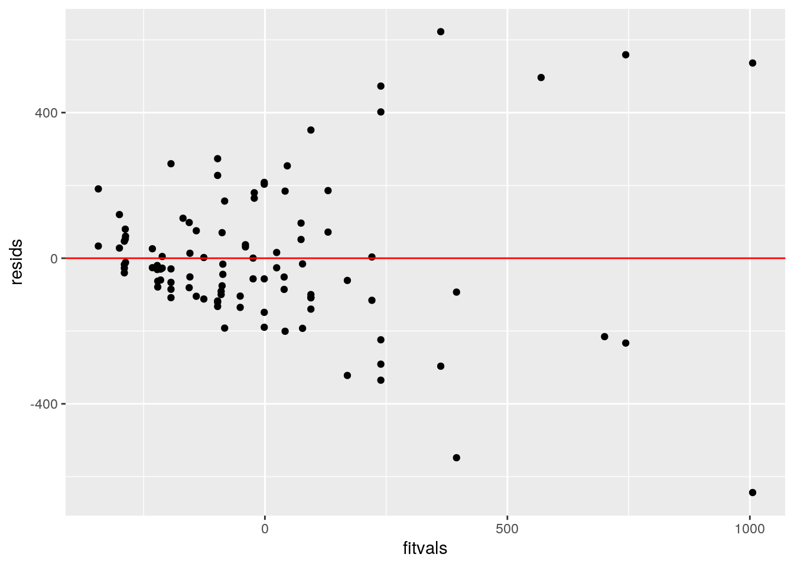

December 6, 2020
Introduction
For this project, I have chosen to work with the Dose-Mortality dataset built into R Studio. This dataset givese the dose-mortality for fumagation of codling moth from an injection of methyl bromide. Of the 10 different variables, I will be focusing on dose (of injected methyl bromide in gm/cubic meter), tot (total number of moths), dead (number of dead moths), cm (control mortality at dose 0), Cultivar (factor of levels of different types of the dose), and year (which will be manipulated to be binary since it only includes 1988 and 1989). There will be a total of 99 observations and only the six variables I mentioned above. The numeric variables will be dose, tot, dead, and cm while year will be converted to binary. Cultivar will serve as our one categorical variable.
1. MANOVA Test
man1 <- manova(cbind(dose, dead)~Cultivar, data=Mortality)
summary(man1)## Df Pillai approx F num Df den Df Pr(>F)
## Cultivar 6 0.47911 4.8303 12 184 6.954e-07 ***
## Residuals 92
## ---
## Signif. codes: 0 '***' 0.001 '**' 0.01 '*' 0.05 '.' 0.1 ' ' 1summary.aov(man1)## Response dose :
## Df Sum Sq Mean Sq F value Pr(>F)
## Cultivar 6 227.8 37.964 0.683 0.6637
## Residuals 92 5113.5 55.582
##
## Response dead :
## Df Sum Sq Mean Sq F value Pr(>F)
## Cultivar 6 3885714 647619 8.1397 4.573e-07 ***
## Residuals 92 7319783 79563
## ---
## Signif. codes: 0 '***' 0.001 '**' 0.01 '*' 0.05 '.' 0.1 ' ' 1Mortality%>%group_by(Cultivar)%>%summarize(mean(dose),mean(dead))## `summarise()` ungrouping output (override with `.groups` argument)## # A tibble: 7 x 3
## Cultivar `mean(dose)` `mean(dead)`
## <chr> <dbl> <dbl>
## 1 BRAEBURN 18.9 331.
## 2 FUJI 18.3 308.
## 3 Gala 18.3 414.
## 4 GRANNY 18.3 310.
## 5 Red Delicious 18.7 393.
## 6 ROYAL 14.2 334.
## 7 Splendour 19.5 976.pairwise.t.test(Mortality$dose, Mortality$Cultivar, p.adj="none")##
## Pairwise comparisons using t tests with pooled SD
##
## data: Mortality$dose and Mortality$Cultivar
##
## BRAEBURN FUJI Gala GRANNY Red Delicious ROYAL
## FUJI 0.854 - - - - -
## Gala 0.854 1.000 - - - -
## GRANNY 0.854 1.000 1.000 - - -
## Red Delicious 0.934 0.890 0.890 0.890 - -
## ROYAL 0.131 0.174 0.174 0.174 0.080 -
## Splendour 0.842 0.698 0.698 0.698 0.747 0.087
##
## P value adjustment method: nonepairwise.t.test(Mortality$dead, Mortality$Cultivar, p.adj="none")##
## Pairwise comparisons using t tests with pooled SD
##
## data: Mortality$dead and Mortality$Cultivar
##
## BRAEBURN FUJI Gala GRANNY Red Delicious ROYAL
## FUJI 0.85 - - - - -
## Gala 0.48 0.36 - - - -
## GRANNY 0.86 0.99 0.37 - - -
## Red Delicious 0.54 0.38 0.83 0.39 - -
## ROYAL 0.98 0.83 0.49 0.84 0.54 -
## Splendour 6.2e-07 1.6e-07 6.9e-06 1.8e-07 8.1e-08 4.1e-07
##
## P value adjustment method: none0.05/45## [1] 0.001111111We conducted a one-way MANOVA in order to determine the effect of Cultivar type (BRAEBURN, FUJI, Gala, GRANNY, Red, Delicious, ROYAL) on our two dependent variables (dose of injection and number of dead insects). For our MANOVA assumptions, we can assume that the observations are random samples and independent from one another. It is not certain whether the dependent variables met the ANOVA assumption of normal distribution within each group and the MANOVA assumption of multivariate normality, but we will proceed with caution. Homogeneity of within-group covariance matrices and linear relationships among the dependent variables are also assumed. We do not see any extreme outliers and we assume there is no correlation within the dependent variables.
Significant differences were found between the dose and death number for at least one of the dependent variables, Pillai = 0.48, pseduo F (12, 184) = 4.83, p < 0.0001. The Bonferroni method was used to control Type I error rates (0.0011). Univariate ANOVAs and post-hoc analysis was also confirmed. Among our pairwise t tests, only Splendour showed significance with all the other Cultivar types when comparing the number of dead insects.
2. Randomization Test
summary(aov(dead~dose,data=Mortality))## Df Sum Sq Mean Sq F value Pr(>F)
## dose 1 3227779 3227779 39.25 1.03e-08 ***
## Residuals 97 7977718 82245
## ---
## Signif. codes: 0 '***' 0.001 '**' 0.01 '*' 0.05 '.' 0.1 ' ' 1library(ggplot2)
Fstat<-vector()
for(i in 1:10000){
g1<-rnorm(36)
g2<-rnorm(36)
g3<-rnorm(36)
SSW<- sum((g1-mean(g1))^2+(g2-mean(g2))^2+(g3-mean(g3))^2)
SSB<- 36*sum( (mean(c(g1,g2,g3))-c(mean(g1),mean(g2),mean(g3)))^2 )
Fstat[i]<- (SSB/2)/(SSW/105)
}
data.frame(Fstat) %>%
ggplot(aes(Fstat)) + geom_histogram(aes(y=..density..))+
stat_function(fun=dt,args=list(df=35),geom="line")## `stat_bin()` using `bins = 30`. Pick better value with `binwidth`.Ho: The mean number of dead insects does not differ based on the mean dose received.
HA: The mean number of dead insects does differ based on the mean dose received.
According to these results, we can see that there is a significant difference in the mean of dead insects across the different number of mean dose given (F=39.25, df= (1,97), p < 0.001). We also created a plot to visualize the null distribution and the test statistic to see what the randomization test would look like if the mean number of dead insects were not dependent on the dose received.
3. Linear Regression Model
Mortality$dose_c <- Mortality$dose - mean(Mortality$dose)
Mortality$dead_c <- Mortality$dead - mean(Mortality$dead)
fit <- lm(dead_c ~ Cultivar*dose_c, data=Mortality)
summary(fit)##
## Call:
## lm(formula = dead_c ~ Cultivar * dose_c, data = Mortality)
##
## Residuals:
## Min 1Q Median 3Q Max
## -643.71 -104.31 -27.20 73.63 622.42
##
## Coefficients:
## Estimate Std. Error t value Pr(>|t|)
## (Intercept) -103.060 66.263 -1.555 0.1236
## CultivarFUJI -17.924 91.514 -0.196 0.8452
## CultivarGala 84.754 91.514 0.926 0.3570
## CultivarGRANNY -16.198 91.514 -0.177 0.8599
## CultivarRed Delicious 56.820 77.769 0.731 0.4670
## CultivarROYAL 100.416 99.052 1.014 0.3136
## CultivarSplendour 591.118 94.392 6.262 1.49e-08 ***
## dose_c 10.727 8.901 1.205 0.2315
## CultivarFUJI:dose_c 5.746 12.374 0.464 0.6435
## CultivarGala:dose_c 21.366 12.374 1.727 0.0879 .
## CultivarGRANNY:dose_c 5.862 12.374 0.474 0.6369
## CultivarRed Delicious:dose_c 13.313 10.533 1.264 0.2097
## CultivarROYAL:dose_c 11.914 13.069 0.912 0.3646
## CultivarSplendour:dose_c 32.889 12.933 2.543 0.0128 *
## ---
## Signif. codes: 0 '***' 0.001 '**' 0.01 '*' 0.05 '.' 0.1 ' ' 1
##
## Residual standard error: 218.6 on 85 degrees of freedom
## Multiple R-squared: 0.6376, Adjusted R-squared: 0.5822
## F-statistic: 11.5 on 13 and 85 DF, p-value: 7.814e-14ggplot(Mortality, aes(dose,dead, color = Cultivar)) + geom_smooth(method = "lm", se = F, fullrange = T)+
geom_point()+geom_vline(xintercept=0,lty=2)+geom_vline(xintercept=mean(Mortality$dose))## `geom_smooth()` using formula 'y ~ x'resids<-fit$residuals
fitvals<-fit$fitted.values
ggplot()+geom_point(aes(fitvals,resids))+geom_hline(yintercept=0, color='red')
ggplot()+geom_histogram(aes(resids), bins=20)
shapiro.test(resids) ##
## Shapiro-Wilk normality test
##
## data: resids
## W = 0.93471, p-value = 0.0001009library(sandwich)
library(lmtest)## Loading required package: zoo##
## Attaching package: 'zoo'## The following objects are masked from 'package:base':
##
## as.Date, as.Date.numericbptest(fit)##
## studentized Breusch-Pagan test
##
## data: fit
## BP = 59.009, df = 13, p-value = 7.895e-08summary(fit)$coef[,1:2]## Estimate Std. Error
## (Intercept) -103.060222 66.263469
## CultivarFUJI -17.924262 91.514301
## CultivarGala 84.753599 91.514301
## CultivarGRANNY -16.197692 91.514301
## CultivarRed Delicious 56.820440 77.769193
## CultivarROYAL 100.415533 99.051905
## CultivarSplendour 591.118290 94.391676
## dose_c 10.726779 8.901456
## CultivarFUJI:dose_c 5.746417 12.373772
## CultivarGala:dose_c 21.366004 12.373772
## CultivarGRANNY:dose_c 5.862396 12.373772
## CultivarRed Delicious:dose_c 13.312781 10.533410
## CultivarROYAL:dose_c 11.913796 13.069497
## CultivarSplendour:dose_c 32.889301 12.932832coeftest(fit, vcov = vcovHC(fit))[,1:2]## Estimate Std. Error
## (Intercept) -103.060222 31.045710
## CultivarFUJI -17.924262 39.602221
## CultivarGala 84.753599 95.599103
## CultivarGRANNY -16.197692 47.228905
## CultivarRed Delicious 56.820440 49.896315
## CultivarROYAL 100.415533 58.921928
## CultivarSplendour 591.118290 137.180350
## dose_c 10.726779 2.065334
## CultivarFUJI:dose_c 5.746417 4.138574
## CultivarGala:dose_c 21.366004 18.536930
## CultivarGRANNY:dose_c 5.862396 6.156682
## CultivarRed Delicious:dose_c 13.312781 7.469668
## CultivarROYAL:dose_c 11.913796 6.449647
## CultivarSplendour:dose_c 32.889301 25.424988summary(fit)##
## Call:
## lm(formula = dead_c ~ Cultivar * dose_c, data = Mortality)
##
## Residuals:
## Min 1Q Median 3Q Max
## -643.71 -104.31 -27.20 73.63 622.42
##
## Coefficients:
## Estimate Std. Error t value Pr(>|t|)
## (Intercept) -103.060 66.263 -1.555 0.1236
## CultivarFUJI -17.924 91.514 -0.196 0.8452
## CultivarGala 84.754 91.514 0.926 0.3570
## CultivarGRANNY -16.198 91.514 -0.177 0.8599
## CultivarRed Delicious 56.820 77.769 0.731 0.4670
## CultivarROYAL 100.416 99.052 1.014 0.3136
## CultivarSplendour 591.118 94.392 6.262 1.49e-08 ***
## dose_c 10.727 8.901 1.205 0.2315
## CultivarFUJI:dose_c 5.746 12.374 0.464 0.6435
## CultivarGala:dose_c 21.366 12.374 1.727 0.0879 .
## CultivarGRANNY:dose_c 5.862 12.374 0.474 0.6369
## CultivarRed Delicious:dose_c 13.313 10.533 1.264 0.2097
## CultivarROYAL:dose_c 11.914 13.069 0.912 0.3646
## CultivarSplendour:dose_c 32.889 12.933 2.543 0.0128 *
## ---
## Signif. codes: 0 '***' 0.001 '**' 0.01 '*' 0.05 '.' 0.1 ' ' 1
##
## Residual standard error: 218.6 on 85 degrees of freedom
## Multiple R-squared: 0.6376, Adjusted R-squared: 0.5822
## F-statistic: 11.5 on 13 and 85 DF, p-value: 7.814e-14Looking at the coefficient estimates, we can see that an intercept of -103.060 is the mean number of dead insects (centered) for the Braeburn category with average centered dosage. The Fuji and Granny categories with average dosage have predicted number of dead of 17.924 and 16.198 lower than the Braeburn category with average dose respectively. The Gala, Red Delicious, Royal, and Splendour categories with average dosage have predicted number of dead insects of 84.754, 56.820, 100.416, and 591.118 higher than the Braeburn category respectively. For every 1-unit increase in dosage, predicted number of dead goes up by 10.727 insects for the Braeburn category. Slopes of dose on number of dead for Fuji, Gala, Granny, Red Delicious, Royal, and Splendour are 5.746, 21.366, 5.862, 13.313, 11.914, and 32.889 greater than for Braeburn respectively.
After plotting the regression usign ggplot, we checked if our dataset met the assumptions of linearity, normality, and homoskedacity. Using the residuals from our fit dataset and graphing it, we can see that it fails the linearity and homoskedacity test because of its uneven scatter and tendency to the left of the graph. Graphing a histogram shows how our dataset might pass the normality test but upon running the Shapiro-Wilke test, we can see that is fails (p=0.0001).
We then recomputed the regression results with robust standard errors. After running the bp test on our fitted data, we see a significant p-value less than 0.05, which means we reject our null hypothesis of homoskedacity (our dataset fails homoskedacity). Comparing the changes before and after the robust SEs, we see significant variation in standard errors so our conclusion that it fails homoskedacity is verified.
Finally, we can see after running summary(fit) that 0.6376 of the variation in the outcome can be explained by our model we conducted.
4. Bootstrapped Standard Error
samps<-replicate(5000, {
boots <- sample_frac(Mortality, replace=T)
fits <- lm(dead_c ~ dose_c*Cultivar, data=boots)
coef(fits)
})
samps %>% t %>% as.data.frame %>% summarize_all(sd)## (Intercept) dose_c CultivarFUJI CultivarGala CultivarGRANNY
## 1 36.19374 3.479058 43.97793 82.50691 48.13256
## CultivarRed Delicious CultivarROYAL CultivarSplendour dose_c:CultivarFUJI
## 1 51.75646 58.83533 134.2798 5.053606
## dose_c:CultivarGala dose_c:CultivarGRANNY dose_c:CultivarRed Delicious
## 1 NA 6.513312 7.417462
## dose_c:CultivarROYAL dose_c:CultivarSplendour
## 1 NA NAAfter rerunning the regression model with the bootstrapped standard errors, I'm able to see slight variations in standard errors that resemble mostly the regular SEs. It seems for each category and the interactions, the standard errors are only slightly lower or higher to those of the regular SEs but don't seem to have much resemblance with the robust SEs.
5. Logistic Regression Model
fit1<-glm(year~dose_c+dead_c,data=Mortality,family=binomial(link="logit"))
coeftest(fit1)##
## z test of coefficients:
##
## Estimate Std. Error z value Pr(>|z|)
## (Intercept) 0.5357130 0.2768487 1.9350 0.052986 .
## dose_c 0.1393564 0.0500476 2.7845 0.005361 **
## dead_c -0.0079703 0.0018333 -4.3476 1.376e-05 ***
## ---
## Signif. codes: 0 '***' 0.001 '**' 0.01 '*' 0.05 '.' 0.1 ' ' 1exp(coef(fit1))## (Intercept) dose_c dead_c
## 1.7086661 1.1495337 0.99206141-0.9920614## [1] 0.0079386prob<-predict(fit1,type="response")
pred<-ifelse(prob>.5,1,0)
table(truth=Mortality$year, prediction=pred)%>%addmargins## prediction
## truth 0 1 Sum
## 0 20 14 34
## 1 2 63 65
## Sum 22 77 99(20+63)/99## [1] 0.838383863/65## [1] 0.969230820/34## [1] 0.588235363/77## [1] 0.8181818library(plotROC)
ROCplot<-ggplot(Mortality)+geom_roc(aes(d=year,m=pred), n.cuts=0)
ROCplotcalc_auc(ROCplot)## PANEL group AUC
## 1 1 -1 0.778733Mortality$logit <- predict(fit1)
Mortality <- Mortality %>% mutate(yearss = recode(year, "Year1", "Year2"))
ggplot(Mortality,aes(logit, fill=yearss))+geom_density(alpha=.3)After running the coeftest and exponentiating the estimates, we can see that the odds of the year being 1988 (designated 1) increases by 14.95% for every one unit increase in the dosage. On the other hand, the odds of the year being 1988 decreases by 0.79% for every one unit increase in the number of dead insects.
Next, a confusion matrix was generated to calculate the accuracy, sensitivity, specificity, and precision. The overall accuracy (proportion of correctly classified year) is 0.84. The proportion of correctly classified 1988 cases (TPR) is 0.969. The proportion of correctly classified 1989 cases (TNR) is 0.588. The proportion of predicted 1988 cases that were actually correct (precision) is 0.818. Lastly, we ran an ROC plot and calculated the AUC to be 0.7787. This value summarizes the trade-off between sensitivity and specificty and our value means our AUC was fair.
Finally, we generated a density plot of the log-odds using ggplot. I had to create a new column in my Mortality dataset that includes the log-odds values of the predictions and named it "logit". I added another column to Mortality that changed the binary year column to a categorical one using mutate because the plot would not generate if I used the binary variable for some reason. Unfortunately, this only assigned my 1988 years (assigned binary 1) to a categorical value "Year1" and left 1989 as NA. Regardless, it still generated a density plot where "Year1" represents 1988 and "NA" represents 1989. There is significant overlap especially with the year 1989 being counted as 1988 as you can tell from the gray curve overlapping past 0 towards Year1.
6. Logistic Regression for rest of variables
fit2<-glm(year~tot+cm+Cultivar+dose+dead,data=Mortality,family=binomial(link="logit"))
prob2<-predict(fit2,type="response")
pred2<-ifelse(prob2>.5,1,0)
table(truth=Mortality$year, prediction=pred2)%>%addmargins## prediction
## truth 0 1 Sum
## 0 33 1 34
## 1 1 64 65
## Sum 34 65 99ROCplot2<-ggplot(Mortality)+geom_roc(aes(d=year,m=pred2), n.cuts=0)
ROCplot2
calc_auc(ROCplot2)## PANEL group AUC
## 1 1 -1 0.9776018(33+64)/99## [1] 0.97979864/65## [1] 0.984615433/34## [1] 0.970588264/65## [1] 0.9846154class_diag <- function(probs,truth){
tab<-table(factor(probs>.5,levels=c("FALSE","TRUE")),truth)
acc=sum(diag(tab))/sum(tab)
sens=tab[2,2]/colSums(tab)[2]
spec=tab[1,1]/colSums(tab)[1]
ppv=tab[2,2]/rowSums(tab)[2]
f1=2*(sens*ppv)/(sens+ppv)
if(is.numeric(truth)==FALSE & is.logical(truth)==FALSE) truth<-as.numeric(truth)-1
ord<-order(probs, decreasing=TRUE)
probs <- probs[ord]; truth <- truth[ord]
TPR=cumsum(truth)/max(1,sum(truth))
FPR=cumsum(!truth)/max(1,sum(!truth))
dup<-c(probs[-1]>=probs[-length(probs)], FALSE)
TPR<-c(0,TPR[!dup],1); FPR<-c(0,FPR[!dup],1)
n <- length(TPR)
auc<- sum( ((TPR[-1]+TPR[-n])/2) * (FPR[-1]-FPR[-n]) )
data.frame(acc,sens,spec,ppv,f1,auc)
}
set.seed(1234)
k=10
data<-Mortality[sample(nrow(Mortality)),]
folds<-cut(seq(1:nrow(Mortality)),breaks=k,labels=F)
diags<-NULL
for(i in 1:k){
train<-data[folds!=i,]
test<-data[folds==i,]
truth<-test$year
fit5<-glm(year~tot+cm+Cultivar+dose+dead,data=train,family="binomial")
probs<-predict(fit,newdata = test,type="response")
diags<-rbind(diags,class_diag(probs,truth))
}
summarize_all(diags,mean)## acc sens spec ppv f1 auc
## 1 0.2922222 0.2503968 0.385 0.465 NaN 0.3140298test <- Mortality %>% select(-dose_c, -dead_c, -logit, -yearss)
library(glmnet)## Loading required package: Matrix## Loaded glmnet 4.0-2y<-as.matrix(test$year)
x<-model.matrix(year~.,data=test)[,-1]
cv<-cv.glmnet(x,y,family="binomial")
lasso<-glmnet(x,y,family="binomial",lambda=cv$lambda.1se)
coef(lasso)## 11 x 1 sparse Matrix of class "dgCMatrix"
## s0
## (Intercept) 12.503096144
## dose .
## tot -0.007066206
## dead .
## cm -15.503516855
## CultivarFUJI .
## CultivarGala -9.282004532
## CultivarGRANNY .
## CultivarRed Delicious -4.600854169
## CultivarROYAL 1.655059758
## CultivarSplendour -6.468198805set.seed(1234)
k=10
data1 <- test %>% sample_frac
folds1 <- ntile(1:nrow(data1),n=10)
diags1<-NULL
for(i in 1:k){
train1 <- data1[folds!=i,]
test1 <- data1[folds==i,]
truth1 <- test1$year
fit12 <- glm(year~tot+cm+Cultivar,
data=train1, family="binomial")
probs1 <- predict(fit12, newdata=test1, type="response")
diags1<-rbind(diags1,class_diag(probs1,truth1))
}
diags1%>%summarize_all(mean)## acc sens spec ppv f1 auc
## 1 0.96 0.9777778 0.9466667 0.9708333 0.9717424 0.9944444